直近1週間の更新
10/11 (日)
10/10 (土)
AIが書いたコード、ビルドが通れば問題ないと思っていませんか？ ソフトウェアテストタグが付けられた新着記事 - Qiita
最近はAIを使ってコードを書く機会がかなり増えてきました。自分も日常的にAIを活用していますが、開発速度が上がった一方で、コードレビューの難しさは以前より増しているように感じています。というのも、AIが生成するコードは一見すると非常によくできているからです。命名も自然...
15時間前

AIコーディングエージェントは「失敗から戻る時間」で測る Zennの「Test」のフィード
テストが落ちた。通知を見て、エージェントが出したパッチを開く。差分を読み、テストをやり直す。パッチが数分でできても、この確認が済むまで開発者の作業は止まったままだ。Google社内のpre-submitテスト修復を扱ったFlowAgentのプレプリントには、失敗通知から開発者の次のコード編集まで中央値27.48分という観測値がある。手動評価では195件中131件の修正提案が正しく、正答率は67.18%。一方、エージェントが成功した修正を得るまでの中央値は9.85分と報告されている。ここで数字を足し引きして「これだけ時短した」とは言えない。27.48分は開発者側の次の編集までの観測であ...
18時間前
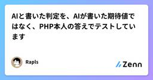
AIと書いた判定を、AIが書いた期待値ではなく、PHP本人の答えでテストしています
Zennの「Test」のフィード
テストの期待値は、誰が書いていますか。自作の WordPress プラグイン Rapls PDF Image Creator のコードは、ほとんど Claude と一緒に書いています。テストも同じです。そうすると、判定のコードと、その判定が正しいかを確かめる期待値を、同じ相手と同じ理解のまま書くことになります。理解がずれていれば、コードと期待値は同じ方向にずれて、テストは緑のままです。10月7日の 1.4.25 で、それを避ける形のテストを1つ入れました。期待値を書くのをやめて、PHP 本人に答えさせています。 直したのは、disable_functions の読み方プラグイン...
1日前
結局、単体テストってどうやって書くの？ AIに任せても要件がぶれにくい書き方 Zennの「Test」のフィード
AIエージェントを使った開発は楽だし、とにかく早いです。が、気づけば要件が増えていたり削れていたりということもしばしば。要件のズレを見つける手段の一つが単体テストで、ここさえ見ればOKとは言えませんが、いくらかの検出には役立つ実感があります。しかし正しい単体テストの設計や書き方ってなんなのか？ 改めて考えてみると割と雰囲気で押し切っている部分が個人的にはあります。というわけで、単体テストはどう書けばよいのかを資料に当たりながら整理しよう。というのがこの記事の趣旨です。 単体テストとはどこまでを指すのか 「単体」に決まった定義はない単体テストの「単体」が何を指すのか、厳密な...
1日前
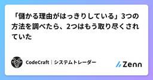
「儲かる理由がはっきりしている」3つの方法を調べたら、2つはもう取り尽くされていた Zennの「Test」のフィード
日本株のBotを作っていて、値動きから次の値動きを当てる戦略を200通り以上試しましたが、どれも基準を通りませんでした。そこで狩り場を変えることにしました。値動きを当てるのではなく、「決まっている出来事」で稼ぐ方法です。日経平均の銘柄入れ替え: 採用された銘柄は、決まった日に指数連動の資金が必ず買うTOB(株式公開買付): 買付価格が決まっていて、市場価格との差を取る株主優待クロス: 現物買いと信用売りを同時に入れて、値動きのリスクなしに優待だけを受け取るどれも「なぜ儲かるのか」の理由がはっきりしています。実弾は入れず、過去のデータで調べました。結論を先に書くと、理由が...
1日前

起票する前に、重複バグを見つけよう Zennの「QA」のフィード
ログイン画面のバグを例に考えてみます。月曜日にテスターが「ログインのスピナーが回り続ける」と書きました。火曜日にはサポート担当が「パスワード画面の後でサインインできない」と書きました。水曜日には開発者が、トークン更新のタイムアウトに触れた3件目の報告を見つけました。チケットは3件、担当者は3人、バグは1つです。それぞれのチケットが答えの一部を持っています。1件目には手順があり、2件目には待っているお客様がいて、3件目にはログがあります。全体像を誰も見られないまま、同じ問題を誰かが3回トリアージすることになります。重複は不注意の表れではありません。違う人が同じことを違う言葉で表現すると...
1日前
10/9 (金)
ffmpeg 1コマンドで10分動画を1枚画像にして、AIに検品させる Zennの「Test」のフィード
AIに動画を量産させ始めて、すぐに壁に当たった。検品だ。10分の動画を2本、毎回通しで見ていたら20分かかる。かといって見ないと、「背景が数分間真っ黒」のような、機械チェックをすり抜ける見た目の事故を出荷してしまう。結論から書くと、ffmpegのコンタクトシート（一定間隔のフレームをタイル状に並べた1枚画像）を作り、それをマルチモーダルなAIに見せる方法で、10分動画の目視相当の検品が1〜2分で終わるようになった。かかるのはffmpegコマンド1回と、画像1枚ぶんの推論だけだ。 コマンドはこれだけffmpeg -i input.mp4 \ -vf "fps=1/5,scal...
2日前
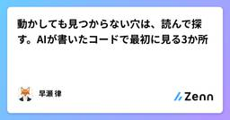
動かしても見つからない穴は、読んで探す。AIが書いたコードで最初に見る3か所 Zennの「Test」のフィード
以前、「AIに書かせたコードは、読まずに6つ試すだけでかなりの穴が見つかる」という記事を書きました。https://zenn.dev/ritsuhayase/articles/ab8e0c9f2dd66eただ、試すだけでは見つからない穴もあります。手元の回線が速い、相手のサーバーが元気、テストが緑。この条件がそろっていると、何度動かしても問題は出てきません。そういう穴は、コードの決まった場所を読みに行くほうが早く見つかります。この記事では、その場所を3つに絞って出します。どれも検索1回で該当箇所に飛べます。載せた出力は、すべて実際に実行して採取したものです（Windows 10 ...
2日前
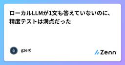
ローカルLLMが1文も答えていないのに、精度テストは満点だった Zennの「Test」のフィード
TL;DRローカルLLMの解釈に失敗したときは、キーワードで判定する規則パーサに切り替える作りにしていました。そして精度を測るベンチも、同じ規則パーサの出力を正解として使っていました。この組み合わせだと、LLMが1文も答えていなくてもベンチは満点になります。切り替え先の答えと正解が、同じものから出てくるからです。実際にfew-shotを1例足したところ、プロンプトが文脈長の1024トークンを超え、すべての入力が規則パーサに回っていました。そのあいだもベンチは16/16を示していて、異変に気づけたのは、本番と同じ経路を通すスモークテストが落ちたからでした。 日本語の指示をJSO...
2日前
agent-browserとPlaywrightで、探索と検証を分ける Zennの「Test」のフィード
!本記事は、dev.toに公開した"Why agent-browser and Playwright Work So Well Together"を日本語向けに一部再構成したものです。最近UIの評価フローにagent-browserを導入することがあります。通常のE2Eテストは、操作経路が決まっている場面で有効です。await page.getByRole("button", { name: "Settings" }).click();await expect( page.getByRole("dialog", { name: "Settings" })).toBeV...
2日前
CloudflareのGoogle OAuthが失敗した原因はfetchのredirect指定だった Zennの「Test」のフィード
「場所メモ」は、行きたい場所の候補と訪問履歴を分けて残す、自分用のWebアプリです。現在は開発中で、本番には未公開です。端末間で記録を同期するため、Cloudflare Pages FunctionsにGoogleサインインを実装しました。ところが、Googleの画面から戻ったあとに認証が失敗します。Nodeで通っていたテストでは、この問題を拾えていませんでした。修正したのは、トークン取得と署名検証用の公開鍵取得に指定していた redirect: 'error' です。workerdで使える manual に変え、3xx応答を受けたら処理を止めるようにしました。 通信エラーの表示...
2日前
10/8 (木)
JSTQB（ソフトウェアテスト技術者資格認定組織）、Advanced Level シラバス 日本語版 テスト自動化エンジニア Version 2.0 を公開 特定非営利活動法人ソフトウェアテスト技術振興協会【プレスリリース】 by PR TIMES
[特定非営利活動法人ソフトウェアテスト技術振興協会]JSTQB（ソフトウェアテスト技術者資格認定組織）は、2026 年 10 月 7 日（水）に Advanced Level シラバス 日本語版 テスト自動化エンジニア（CTAL-TAE）の最新版、Version 2.0を公開しました。本シラバスは、テ...
3日前

A User-Triggered UAV Dispatching System for Precise and Timely Mountain Search Missions arXiv Query: search_query=all:"software testing"&id_list=&start=0&max_results=10
Smartphones carried by hikers routinely record routes, locations, and requests for assistance, and these records can provide precise clues for mountain search. However, they are rarely transformed in a direct and timely way into unmanned aerial vehicle (UAV) missions that support search and rescue. This paper presents a user-triggered UAV dispatching system that integrates mobile information collection, ground station mission management, and UAV search into a single workflow. In our system, a mo
3日前

Bugbash改め『デモ会』へ。CSメンバーが参加するようになって変わったこと Zennの「Test」のフィード
こんにちは！アルダグラムでQAエンジニアをしているshige_sです。2024年から取り組んでいる「Bugbash」について、以前こちらの記事でご紹介しました。https://zenn.dev/aldagram_tech/articles/7f4f7e5a1f3b97あれから2年以上が経ち、このイベントは今では開発プロセスに欠かせないものとして定着しています。今回は、今年7月から新たに加わった変化と、それにあわせて変更したイベント名「デモ会」についてご紹介します。 これまでの参加メンバーこれまでBugbashに参加してもらっていたのは、以下のような開発に近いメンバーでした。...
3日前
Bugbash改め『デモ会』へ。CSメンバーが参加するようになって変わったこと Zennの「QA」のフィード
こんにちは！アルダグラムでQAエンジニアをしているshige_sです。2024年から取り組んでいる「Bugbash」について、以前こちらの記事でご紹介しました。https://zenn.dev/aldagram_tech/articles/7f4f7e5a1f3b97あれから2年以上が経ち、このイベントは今では開発プロセスに欠かせないものとして定着しています。今回は、今年7月から新たに加わった変化と、それにあわせて変更したイベント名「デモ会」についてご紹介します。 これまでの参加メンバーこれまでBugbashに参加してもらっていたのは、以下のような開発に近いメンバーでした。...
3日前
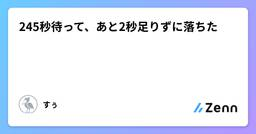
245秒待って、あと2秒足りずに落ちた
Zennの「Test」のフィード
全国20都市・435館の公共図書館で「いまどの本が貸出中か」を毎朝数えるシステムを個人で動かしています。データはカーリルの図書館APIから取っていて、仕組みは別の記事に書きました。このAPIには 1,000書籍リクエスト/時 の上限があります。観測は 284冊 × 20自治体 = 5,680リクエスト/日 なので、1時間に1バッチずつ、7回に分けて夜中から朝にかけて流しています。先日、そのうちの1バッチが 2秒足りずに死にました。 朝7時の通知🚨 異常: 当日の観測が公開基準を満たしません影響: ランキングと記事の生成を停止公開のゲートは「欠測が1件でもあったら止める」にし...
3日前
MemoCare: An Interactive Multimodal Mobile System for Automated Cognitive Screening arXiv Query: search_query=all:"software testing"&id_list=&start=0&max_results=10
MemoCare is an interactive mobile system for automated multimodal cognitive screening. A React Native application combines spoken responses, temporal and spatial orientation, touchscreen actions, and visuoconstruction in complete English and Vietnamese workflows. Speech is transcribed by Google Speech-to-Text and scored locally with deterministic task-specific natural language processing rules; GPS coordinates are resolved by the MemoCare spatial module before answer matching; touch tasks are sc
3日前
10/7 (水)
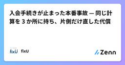
入会手続きが止まった本番事故 — 同じ計算を 3 か所に持ち、片側だけ直した代償 Zennの「品質」のフィード
はじめに以前 AIネイティブ開発でQCDはどう変わったか — 直近2週間を実測データで評価する で、不具合の発生率を実測し、「不具合が頻発して見える主因は発生率の悪化ではなく検出率の向上と分母の増加だった」と書きました。その記事の最後に「検出率が上がった状態が定常化すれば、次は発生率そのものを下げるフェーズに入る」とも書いています。こうした事象がどの程度の頻度で起きるのかは、1 件ごとの振り返りを積み重ねないと分かりません。検証と改善を続けながら、結果を良いものも悪いものも正直に公開していくつもりです。その具体的な事案として、少し前に 犯人のいない本番事故 — AI レビューも ...
4日前
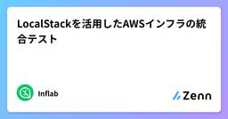
LocalStackを活用したAWSインフラの統合テスト 1 Zennの「Test」のフィード
1 Zennの「Test」のフィード
こんにちは。Inflabでバックエンド開発を担当しているINTです。私は最近オープンした採用サービスRallitのプロジェクトに参加しました。既存のInflearnのサービスとは異なるスタックと環境で開発されており、その過程で多くの試行錯誤と検討を重ねました。本記事では、その中からAWSサービスを使うロジックの統合テストのために localstack を導入した過程を共有したいと思います。 統合テスト私たちは、正しく動作するきれいなコードのためにテストを書きます。テストは依存関係の有無によって、大きく3種類に分けられます。e2eintegrationunit本記...
4日前
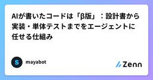
AIが書いたコードは「β版」：設計書から実装・単体テストまでをエージェントに任せる仕組み Zennの「Test」のフィード
AIにコードを書かせると、驚くほど速く形になります。一方で、「本当に設計書どおり？」「テストは意味のあることを確かめている？」という不安も残ります。この記事では、設計書（Markdown）からSpring Bootのバッチ・APIのコードと単体テストをAIに作らせ、機械のチェックと人のレビューで品質を担保する仕組みを紹介します。実物は ai-coding リポジトリで公開しています。サンプルの業務（会員・注文）とIDは、すべて架空です。 前提：AIの生成物は「β版」この仕組みでは、最初に立場をはっきりさせています。AI（GitHub Copilot のエージェント）は、設計書...
4日前
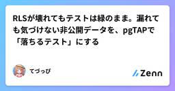
RLSが壊れてもテストは緑のまま。漏れても気づけない非公開データを、pgTAPで「落ちるテスト」にする Zennの「Test」のフィード
はじめに🤔「RLS のポリシー、ちゃんと効いているかどうやって確かめよう…」😥「テストは通っているけど、本当に守れているのか自信がない…」🫠「そもそも、データが漏れていたら気づけるんだろうか…？」RLS（Row Level Security）は、書くこと自体はそれほど難しくありません。難しいのは、書いたルールが正しく効き続けているかを確かめることです。個人開発している口コミサービス あじぴた には、本人以外には絶対に見せてはいけないデータがあります🔒そして、このデータが漏れても、エラーは 1 つも出ません。この記事では、そういうデータを守るためにRLS のテスト...
4日前
10/6 (火)
AIが書いたコード、テストは通るのに危険でした：Jestでデータ混入を見つける Zennの「Test」のフィード
はじめにAIに「注文をCSVで出力する関数を作って」と頼んだとします。返ってきたコードは読みやすく、サンプルデータでも正しいCSVを出力します。それでも、実際の仕様に合っているとは限りません。この記事では、別テナントの注文がCSVに混ざるという、正常系だけでは見落としやすいバグをJestのテストで見つけます。AIが生成したという想定の実装を使いますが、同じ方法は人が書いたコードにも使えます。Jestの導入や基本構文から確認したい方は、別記事「Jestの使い方を基礎から学ぶ」も参照してください。!この記事の結論は、AI生成コードには大量のテストが必要ということではありません...
4日前
プログラミングが好きな、すべてのエンジニアへ（もっと良くなる日本のIT vol.4） SHIFT EVOLVE グループの新着イベント
開催日時: 2026/11/05 19:00 ～ 20:30<br />開催場所: 港区麻布台1-3-1(麻布台ヒルズ森JPタワー)<br /><br /><h2>プログラミングが好きな、すべてのエンジニアへ（もっと良くなる日本のIT vol.4）</h2><p>SHIFTの技術顧問川口耕介氏による対談企画。お相手は川口氏が自ら選出！<br>アメリカで最先端の技術を開発し活躍してきた彼が思う、日本のITの未来とは。</p><p>今回は、Rubyコミッターとして世界的に知られるSTORES株式会社 フェローの笹田耕一氏をゲストにお迎えします。 <br>Rubyの処理速度を劇的に向上させた仮想マシンYARVを開発し、世界中の開発者を支え続ける笹田氏と、継続的インテグレーションツールJenkinsを開発し、ソフトウェア開発の現場に革命を起こした川口耕介氏。 </p><p>世界のソフトウェア開発現場に絶大な影響を与えてきたお二人が、AI時代におけるOS...
5日前
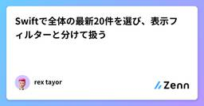
Swiftで全体の最新20件を選び、表示フィルターと分けて扱う Zennの「Test」のフィード
履歴の一覧に「最新 N 件」という条件を付けるときは、何を数えるかを最初に決めておくと境界のテストを作りやすくなります。ここでは、種類をまたぐ一つの履歴から最新20件の ID を決め、その後で画像だけを表示する、小さな Swift モデルを作ります。Deskferry チームの開発メモとして、AI の支援を受けて執筆し、コードと参照資料を確認しました。以下のコードは人工データだけで実行しました。Deskferry の本番コードを抜き出したものではなく、アプリの実機検証も含みません。 1. 入力は「同じ時点の全履歴」にそろえるこのモデルの入力契約は次のとおりです。notes ...
5日前
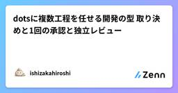
dotsに複数工程を任せる開発の型 取り決めと1回の承認と独立レビュー Zennの「Test」のフィード
この記事自体もdotsが執筆しています。事実整理・独立検収・公開は手元の担当です。前作の「ChatGPTとClaudeからSlack経由でdotsに指示を出す仕組み」では、AIへの依頼を渡し、結果を受け取る入口を作りました。案件番号を付け、GitHubの固定commitに指示書を置き、進捗は看板のPROGRESS.mdで追います。Slackの同じ会話で受付と報告をつなぎ、独立レビューと手元の検収で受け取る仕組みです。今回はその仕組みで、作り直し途中のDesklyに載せる機能を開発しました。複数工程を最初の1回の承認で任せるには何を決める必要があるか、CIが成功した後に何を見るかを、...
5日前
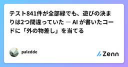
テスト841件が全部緑でも、遊びの決まりは2つ間違っていた ― AI が書いたコードに「外の物差し」を当てる Zennの「Test」のフィード
はじめにブラウザだけで遊べるボードゲームの遊び場「棋楽軒」を作っています。https://kirakuken.com将棋・チェス・大富豪・花札など15種類が、登録なしで遊べます。前の記事で、Claude Code に実装を任せて、人は判断と評価だけをする回し方を書きました。https://zenn.dev/paledde/articles/f7bbf9082e5109今回はその続きで、書かせたコードをどうやって確かめるかの話です。見直しを始めた時点でテストは841件あって、走らせると全部通っていました。それでも、遊びの決まりが2つ間違っていました。以下、店主（僕）と番...
5日前
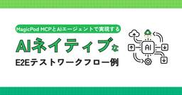
MagicPod MCPとAIエージェントで実現するAIネイティブなE2Eテストワークフロー例 MagicPod Blog
こんにちは。MagicPodでエバンジェリストをしている伊藤由貴です。目次 -->目次ワークフローの全体像今回はMagicPod MCPを使い、Claude CodeとMagicPod等を連携させながら、仕様変更をもとにMagicPodのテストをアップデートして実⾏するまでの流れを作ってみます。テスト対象今回はテスト対象として、HOTEL PLANISPHERE - テスト⾃動化練習サイトHOTEL PLANISPHERE - テスト⾃動化練習サイト（仕様変更版）実際の流れここからは、実際に概要図の流れに沿って使い⽅の例を⾒ていきましょう。1. 仕様変更の記載今回の仕様変更の内容をNotionに書いたものが以下です。あくまでもワークフローの例なので、⾮常にシンプルな変更です。2. 仕様変更をもとにテストの変更内容を把握し、テストケース⼀覧をアップデートNotionにあらかじめテストケースの概要が記載されている、とします。このページに対して、先の仕様変更内容をAIを⽤いて反映させます。Notionの「[DesignDoc] 宿泊予約システム：予約可能期間の仕様変更」ページに記載され...
5日前
【MagicPod MCP Server活用】毎朝のCI失敗の調査をAIエージェントに任せる MagicPod Blog
AIエージェントは、ここ1年だけを見ても驚くほどの速度で進化しています。Claude、Cursor、Codexといったツールは、数ヶ月前にはできなかったことを当たり前のようにこなすようになりました。目次 -->目次MagicPod MCP Serverを刷新しましたMagicPod MCP Server（MCPサーバー）は、AIエージェント（Claude、Cursorなど）から自然言語でMagicPodを操作できるようにする仕組みです。テスト編集まわりでは、他にもできることが増えています。エージェントが実際の画面をキャプチャし、そこから安定して動くロケータを提案したり、既存のロケータがまだ有効かを検証したりできます。テストが落ちたときの「アプリ側の不具合なのか、ロケータが古くなっただけなのか」という切り分けを、エージェントと一緒に進められます。QRコードの読み取りのように、画像をテストデータとして使うテストであれば、その画像のアップロードもできます。開始と終了のステップを指定した部分的な実行もできるので、直したい箇所だけを繰り返し試せます。テストケースや共有ステップの整理も任せら...
5日前
10/5 (月)
Two-Way Doors: Don’t Code Yourself into a Corner Google Testing Blog
@media only screen and (max-width: 600px) { .body { overflow-x: auto; } .post-content table, .post-content td { width: auto !important; white-space: nowrap; }}This article was adapted from a Google Tech on the Toilet (TotT) episode. You can download a printer-friendly version of this TotT episode and post it in your office.By Nimit Khandelwal and Chris KennellyOn large software projects, even seemingly trivial choices can set assumptions that the codebase naturally evolves around, making them in
6日前

MESCIUS(旧GrapeCity)コンポーネントを使用したデスクトップアプリのテスト自動化 Ranorex Blog - テスト自動化ツール 『Ranorex』
MESCIUS（メシウス）社のコンポーネントは、多くのデスクトップおよびWebアプリケーションで採用されています。アプリケーションの品質維持にはUIテストが不可欠であり、その自動化には、利用するツールが対象のコンポーネン […]The post MESCIUS(旧GrapeCity)コンポーネントを使用したデスクトップアプリのテスト自動化 first appeared on テスト自動化ツール 『Ranorex』.
6日前
10/4 (日)
How疲れには地に足ついた話を添えよう #freee技術の日 yuden
freee技術の日2026に参加してきました。 freee 技術の日 2026freee 技術の日 は、エンジニアリング、プロダクトマネジメント、デザイン、QAなど、freeeのあらゆる技術をご紹介すfreee-tech-day.freee.co.jp 続きをみる
7日前